Foox
Music Theory, Genetic Algorithms & Python
(A fun brain-break)
Music Theory, Genetic Algorithms & Python
(A fun brain-break)
Nicholas H.Tollervey
 ntoll.org
/
ntoll.org
/
 ntoll@ntoll.org
/
ntoll@ntoll.org
/
 @ntoll
@ntoll
Two Contrasting Melodies
Contrasting Melodic Shapes
Contrasting Contours
Contours!
Contrasting Melodic Density
Contrasting Melodic Density
Dense Vs Sparse!
Counterpoint
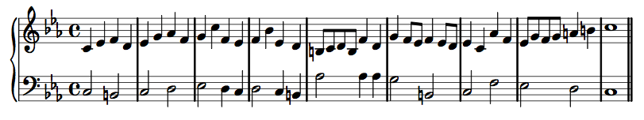Two contrasting yet related melodies that fit together.
Counterpoint

Pick a part, play the counterpoint and concentrate on its shape while listening to the piece as a whole
.
Counterpoint
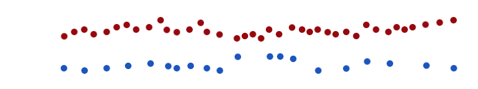Listen again in the same way but, this time, follow the other part and concentrate on how often the notes sound.
Counterpoint
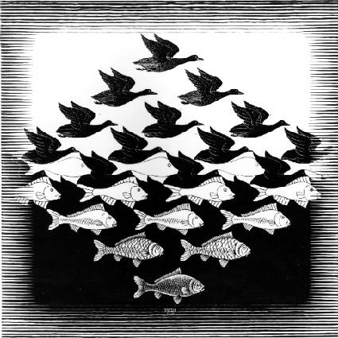Contrasting yet related.
Counterpoint is Ingenious
As demonstrated by J.S.Bach (contrapuntal genius)
| Original | Inversion | Retrograde | Retrograde inversion |
Counterpoint is Ingenious II
As demonstrated by J.S.Bach (contrapuntal genius)
| Voicing | Augmentation | Diminution |
Spot the transformation(s)
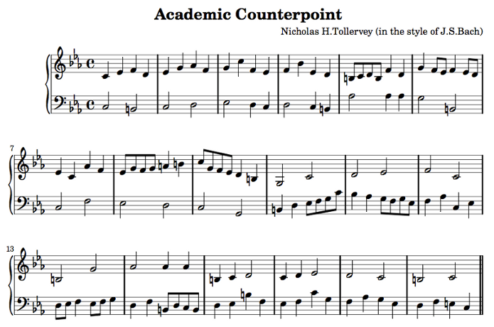But How Does it Work?
If only...
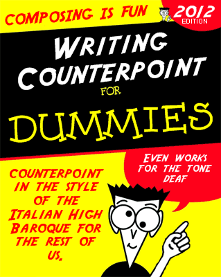Actually...
Johann Joseph Fux
(1660-1741)
Gradus ad Parnassum
Steps to Parnassus (dwelling place of the gods).
- Five species of rules of increasing complexity.
- The rules describe the valid pitch and rhythmic relationships between notes.
- Initially the counterpoint has two voices:
- one, the Cantus Firmus, is given to the student,
- the other is created by the student with rules from a specific species.
Cantus Firmus
(Fixed song
based on medieval plainchant)
Rules Concerning Pitch
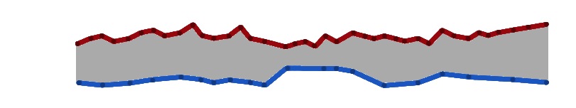Governing valid intervals (distance) between notes.
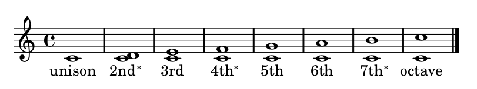Rules for Movement Through Time
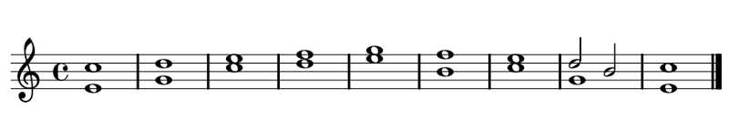 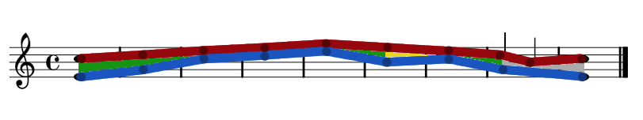Similar, Parallel, Contrary & Oblique motion.
How can I use Fux's species to make computer generated counterpoint?
The Problem:
- Silly/huge number of potential results.
- Needle in a haystack (most potential results wrong).
- Generating solutions algorithmically is hard.
Furthermore, any solution should be:
- Timely (take less time than a practiced human).
Acceptable
(fooling most people most of the time).
(In other words, on a par with a human derived solution.)
genetic algorithms!
Find
acceptable solutions relatively quickly.- Usually start with an initial population of randomly generated solutions.
- Use evolutionary processes to
explore
the universe of all possible solutions. - Are damn interesting...
Hey presto! Foox is born (geddit?)
How does it work?
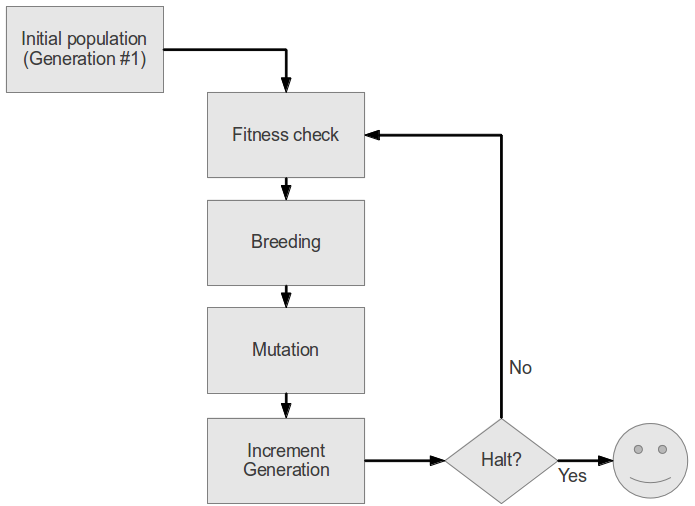How does it work?
def genetic_algorithm(population, fitness, generate, halt):
"""
A generator that yields a list of genomes ordered by fitness (descending).
Each yielded list represents a generation in the execution of the genetic
algorithm.
@param population: the starting population of genomes.
@param fitness: a function which given a genome will return a fitness
score.
@param generate: a function that produces offspring genomes for the next
generation.
@param halt: a function to test if the genetic algorithm should stop.
"""
current_population = sorted(population, key=fitness, reverse=True)
generation_count = 1
yield current_population
while not halt(current_population, generation_count):
generation_count += 1
new_generation = generate(current_population)
current_population = sorted(new_generation, key=fitness, reverse=True)
yield current_population
Wordolution: An example / detour
Wordolution evolves a solution from a starting population of words containing random letters:
$ wordolution -w cat
['pot', 'int', 'qag', 'ovw', 'wmb', 'jzs', 'gnp', 'oyw', 'gze', 'mss']
pot 1
['hot', 'qag', 'bnt', 'qot', 'ovt', 'nag', 'owt', 'pdt', 'bnt', 'hot']
hot 1
['qat', 'hot', 'qag', 'bnt', 'qot', 'ovt', 'qrt', 'bot', 'zqg', 'hoy']
qat 2
['qat', 'qat', 'zat', 'nat', 'qat', 'qat', 'jaj', 'vxc', 'vxc', 'vxc']
qat 2
['qat', 'nat', 'zat', 'eat', 'lat', 'lat', 'nat', 'laj', 'iab', 'wut']
qat 2
['lat', 'zat', 'gat', 'zat', 'zat', 'zat', 'zat', 'yat', 'gct', 'zht']
lat 2
['cat', 'lat', 'zat', 'gat', 'zat', 'zat', 'gat', 'maw', 'lft', 'zac']
cat 3
(A truncated evolution of cat
)
The fitness of a candidate solution is based upon its Levenshtein distance (number of different characters) from the target word.
def make_fitness_function(word):
"""
Given the target word, will return a function that takes a single Genome
instance and returns a fitness score (based upon its Levenshtein distance).
"""
word_len = len(word)
def fitness_function(genome):
"""
Returns the fitness score of the genome.
"""
if genome.fitness:
return genome.fitness
genome.fitness = abs(word_len -
levenshtein(word, ''.join(genome.chromosome)))
return genome.fitness
return fitness_function
Candidate solutions are instances of Genome (base class)
class Genome(object):
"""
Genomes represent candidate solutions.
"""
def __init__(self, chromosome):
"""
The chromosome is a list of genes that encode specific characteristics
of the candidate solution (genome). The different settings that a gene
may possess are called alleles, and their location in the chromosome is
called the locus. The state of the alleles in a particular chromosome
is called the genotype. It is the genotype that provides information
about the state of the actual candidate solution. The candidate
solution itself is called a genome (hence the name of this class).
"""
self.chromosome = chromosome # e.g. ['c', 'a', 't']
self.fitness = None # Denotes unknown. Set by the fitness function.
def breed(self, other):
"""
Returns two new offspring bred from this and another instance. Uses the
crossover function.
"""
return crossover(self, other, self.__class__)
def mutate(self, mutation_range, mutation_rate, context):
"""
To be overridden as per requirements in the child classes.
"""
return NotImplemented
def __eq__(self, other):
... etc ...
The crossover function is synonymous with breeding new
candidate solutions. The genetic
information from both parents is mixed together to create
two new children
.
def crossover(mum, dad, klass):
"""
Given two parent genomes and a Genome class, randomly selects a midpoint
and then swaps the ends of each genome's chromosome to create two new
genomes that are returned in a tuple.
"""
# Check if the parents are the same,
if mum == dad:
# and do nothing if they are.
return (mum, dad)
crossover_point = random.randint(0, len(mum))
baby1 = klass(mum[:crossover_point] + dad[crossover_point:])
baby2 = klass(dad[:crossover_point] + mum[crossover_point:])
return (baby1, baby2)
So cat
and dog
could produce cog
and dat
.
Wordolution's Genome sub-class
class Genome(ga.Genome):
"""
A class to represent a candidate solution for a target word.
"""
def mutate(self, mutation_rate, mutation_range, context):
"""
Mutates the genotypes. Only the mutation_rate is used in this simple
example.
"""
for locus in range(len(self.chromosome)):
if mutation_rate >= random.random():
# Verbose, but correctly named for clarity.
new_allele = random.choice(LETTERS)
self.chromosome[locus] = new_allele
self.fitness = None # force recalculation of fitness
The mutate method has a
mutation_rate chance of changing a letter at
random.
The generate function makes new generations.
def make_generate_function(mutation_range, mutation_rate, word):
"""
Given a target word, mutation range and mutation rate will use return a
function that takes a seed generation and returns a new generation.
"""
def generate(seed_generation):
"""
Given a seed generation will return a new generation of candidates.
"""
length = len(seed_generation)
# Keep the fittest 50%
new_generation = seed_generation[:length/2]
# Breed the remaining 50% using roulette wheel selection
offspring = []
while len(offspring) < length/2:
mum = ga.roulette_wheel_selection(seed_generation)
dad = ga.roulette_wheel_selection(seed_generation)
children = mum.breed(dad)
offspring.extend(children)
# Mutate
for genome in offspring:
genome.mutate(mutation_range, mutation_rate, word)
# Ensure the new generation is the right length
new_generation.extend(offspring)
new_generation = new_generation[:length]
return new_generation
return generate
Casino like selection that favours the fittest.
def roulette_wheel_selection(population):
"""
A random number between 0 and the total fitness score of all the genomes in
a population is chosen (a point within a slice of a roulette wheel). The
code iterates through the genomes adding up the fitness scores. When the
subtotal is greater than the randomly chosen point it returns the genome
at that point "on the wheel".
See: https://en.wikipedia.org/wiki/Fitness_proportionate_selection
"""
total_fitness = 0.0
for genome in population:
total_fitness += genome.fitness
# Ensures random selection if no solutions are "fit".
if total_fitness == 0.0:
return random.choice(population)
random_point = random.uniform(0.0, total_fitness)
fitness_tally = 0.0
for genome in population:
fitness_tally += genome.fitness
if fitness_tally > random_point:
return genome
Choose random point between zero and the sum of the fitness scores.
The halt function checks if an acceptable solution has evolved (or gives up after n generations).
def halt(population, generation_count):
"""
Given a population of candidate solutions and generation count (the number
of epochs the algorithm has run) will return a boolean to indicate if an
acceptable solution has been found within the referenced population.
"""
word_length = len(population[0].chromosome)
return population[0].fitness == word_length or generation_count > 100
Encoding Music for foox
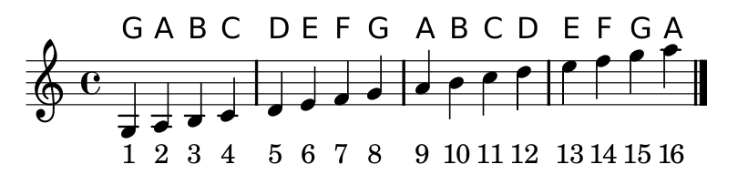
[5, 7, 6, 5, 8, 7, 9, 8, 7, 6, 5]
Foox Fitness Functions
Specific rules of a species are encoded as various tests and punished or rewarded accordingly:
# Make sure the solution starts correctly (at a 5th or octave).
first_interval = contrapunctus[0] - cantus_firmus[0]
if first_interval == 7 or first_interval == 4:
fitness_score += REWARD_FIRST
else:
fitness_score -= PUNISH_FIRST
# Make sure the solution finishes correctly (at an octave).
if contrapunctus[-1] - cantus_firmus[-1] == 7:
fitness_score += REWARD_LAST
else:
fitness_score -= PUNISH_LAST
(An example from first species counterpoint.)
Foox Fitness Functions
# Reward / punishment to ensure the solution starts correctly (5th or 8ve).
REWARD_FIRST = 1
PUNISH_FIRST = 0.1
# Reward / punishment to ensure the solution finishes correctly (at an 8ve).
REWARD_LAST = 1
PUNISH_LAST = 0.1
# Reward / punishment to ensure the penultimate note is step wise onto the
# final note.
REWARD_LAST_STEP = 1
PUNISH_LAST_STEP = 0.7
# Reward / punish contrary motion onto the final note.
REWARD_LAST_MOTION = 1
PUNISH_LAST_MOTION = 0.1
# Punishment if the penultimate note is a repeated note.
PUNISH_REPEATED_PENULTIMATE = 0.1
# Make sure the movement to the penultimate note isn't from too
# far away (not greater than a third).
REWARD_PENULTIMATE_PREPARATION = 1
PUNISH_PENULTIMATE_PREPARATION = 0.7
# Punish parallel fifths or octaves.
PUNISH_PARALLEL_FIFTHS_OCTAVES = 0.5
# Punishment for too many repeated notes.
PUNISH_REPEATS = 0.1
# Punishment for too many parallel thirds
PUNISH_THIRDS = 0.1
# Punishment for too many parallel sixths.
PUNISH_SIXTHS = 0.1
# Punishment for too many parallel/similar movements.
PUNISH_PARALLEL = 0.1
# Punishment for too many large leaps in the melody.
PUNISH_LEAPS = 0.1
A simple command
$ foox -s 1 -cf 5 7 6 5 8 7 9 8 7 6 5 -o first
... evolution happens ...
$ lilypond first.ly
... lilypond magic ...
$ evince first.pdf
$ timidity first.midi
$ foox --help
usage: foox [-h] [--version] [-v] -s SPECIES -cf
[CANTUS_FIRMUS [CANTUS_FIRMUS ...]] [-o OUT]
Evolves valid solutions to species counterpoint problems.
optional arguments:
-h, --help show this help message and exit
--version show program's version number and exit
-v, --verbose increased amount of verbosity
-s SPECIES, --species SPECIES
indicated species to use (1-5)
-cf [CANTUS_FIRMUS [CANTUS_FIRMUS ...]], --cantus-firmus [CANTUS_FIRMUS [CANTUS_FIRMUS ...]]
specify the cantus firmus
-o OUT, --out OUT name the output file
So, how does it perform..?
First Species Counterpoint
| 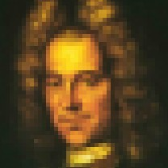 | ||
| FUX | PYTHON |
Results
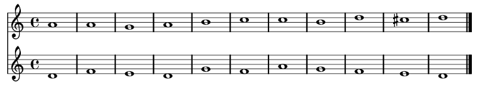 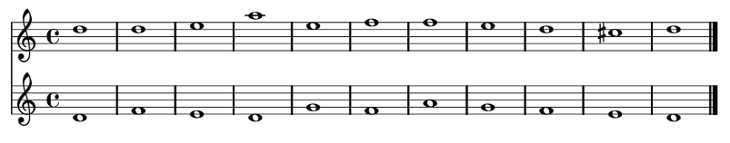Results
Second Species Counterpoint
| 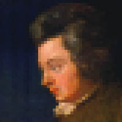 | ||
| MOZART | PYTHON |
Results
 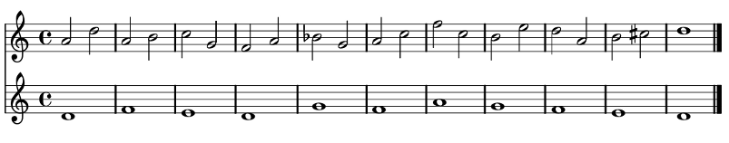
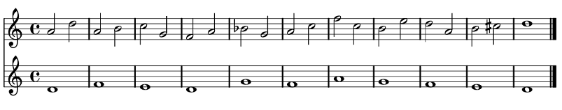
Results
Third Species Counterpoint
| PYTHON | FUX |
Results
Fourth Species Counterpoint
| FUX | PYTHON |
Results
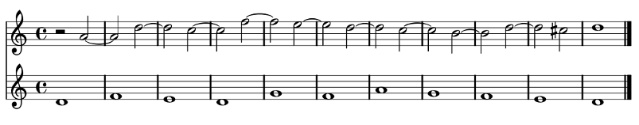 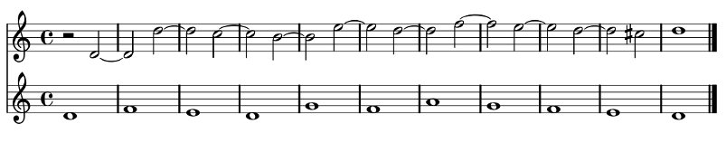Results
Fifth Species
(Unfinished)
Fifth species combines all of the previous species as well as extra rules concerning ornamentation of the melody.
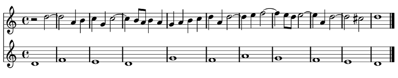
Next steps
Foox is a fun experiment with no serious use case.
However, I'd like to:
- Attempt fifth species.
- Improve the current offering.
- Explore other ways to combine my interests in programming and composition.
Source code
https://github.com/ntoll/foox
Questions..?
Image Credits
Licensed under CC BY 2.0
Image Credits
Sourced from Wikipedia for educational (fair) use.
{kind=link}
{kind=link}
{kind=link}
_by_Lange_1782.jpg){kind=link}
Image Credits
Created using third party services. ;-)
- All musical examples generated by GNU Lilypond
- Dummies Book Cover Generator